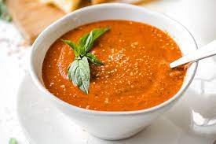

Tomato Basil Soup
Tomato Basil Soup

Ingredients
- 2 tablespoons olive oil
- 1 onion, chopped
- 3 cloves garlic, minced
- 2 cans (28 ounces each) crushed tomatoes
- 4 cups chicken broth
- 1/2 teaspoon sugar
- 1/4 teaspoon red pepper flakes
- 1/4 cup fresh basil leaves, chopped
- Salt and pepper, to taste
- 1/4 cup heavy cream (optional)
Instructions
- In a large saucepan, heat olive oil over medium heat. Add onion and garlic and cook until softened, about 5 minutes.
- Stir in crushed tomatoes, chicken broth, sugar, red pepper flakes, and basil. Season with salt and pepper.
- Bring to a simmer and let cook for 10 minutes.
- Using an immersion blender or transferring to a blender, blend soup until smooth.
- Stir in heavy cream, if using. Serve hot.